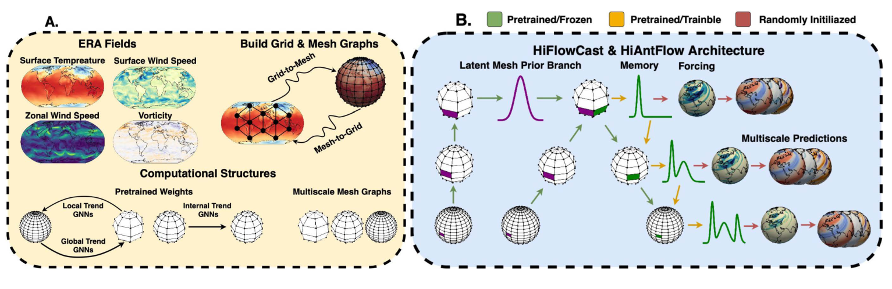
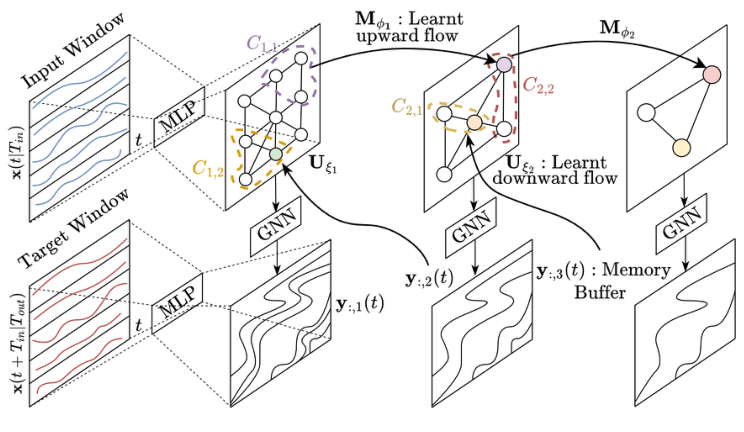
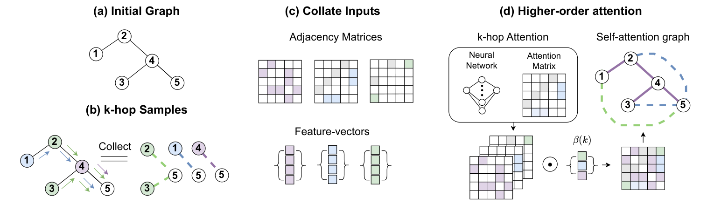
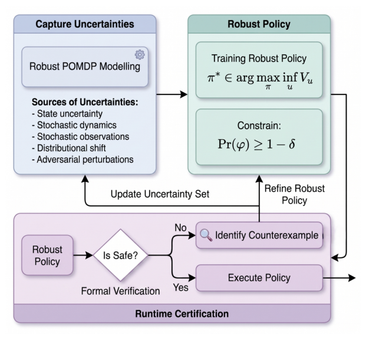
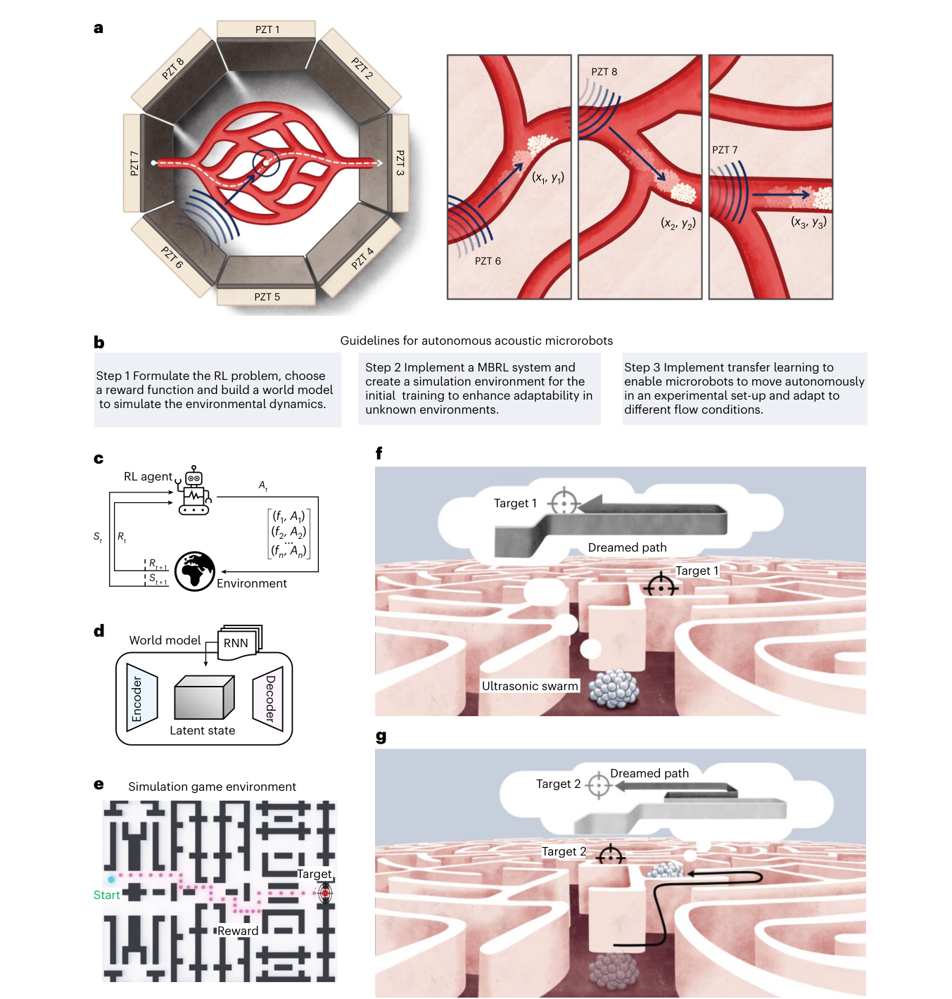
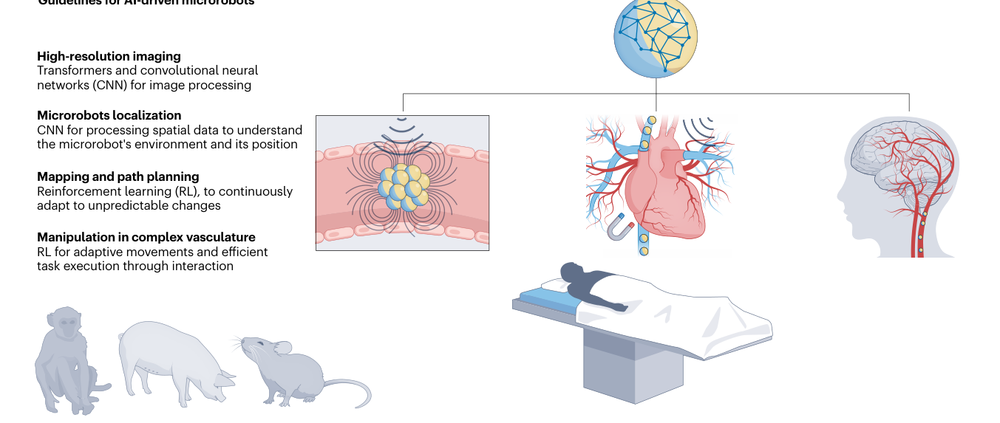

karthikLab
Adjunct Professor, KAIST |
drkarthik@kaist.ac.kr
AI for complex systems: learning across scales, connecting scientific knowledge, and acting under uncertainty.
Research themes: AI for complex systems · Scientific ML · Earth system science · Energy markets · Reinforcement learning
All publications · Climate · Energy · Earth
Graph learning across scales
Architecture diagrams from KDD, IJCAI and WSDM. Select a figure to open it at full resolution.
2026 · Proceedings of the 32nd ACM SIGKDD Conference on Knowledge Discovery and Data Mining
T Bailie, SK Mukkavilli, V Vetrova, YS Koh

The Flow framework: hierarchical and sequential mesh refinement for multiscale forecasting. Figure 1 · T Bailie et al., 2026 Read publication · Google Scholar
2026 · IJCAI
T Bailie, SK Mukkavilli, V Vetrova, YS Koh

HiGFlow architecture: graph coarsening learns global trends, while a memory-buffered downward pass preserves information across scales. Figure 3 · Bailie et al., 2026 Read publication · Google Scholar
2026 · WSDM 2026
T Bailie, YS Koh, SK Mukkavilli

HoGA architecture: k-hop graph sampling, adjacency matrices and higher-order attention combine information at multiple graph distances. Figure 2 · Bailie et al., 2026 Read publication · Google Scholar
Learning and control
2026 · 1st IJCAI Workshop on Safe Physical AI (position paper)
C Zhou, SK Mukkavilli, Y Gao

Robust policy training and runtime certification under partial observability. Figure 1 · C Zhou et al., 2026 Read publication · Google Scholar
2025 · Nature Machine Intelligence 7, 1076–1090
M Medany, L Piglia, L Achenbach, SK Mukkavilli, D Ahmed

Experimental platform and learning workflow for autonomous ultrasound-driven microrobots. Figure 1 · M Medany et al., 2025 Read publication · Google Scholar
2024 · Nature Reviews Bioengineering
M Medany, SK Mukkavilli, D Ahmed

A conceptual framework for AI-driven microrobots in precision medicine. Figure 1 · M Medany et al., 2024 Read publication · Google Scholar
Earlier preprint
Reducing Smoothness with Expressive Memory Enhanced Hierarchical Graph Neural Networks . Thomas Bailie, Yun Sing Koh, S. Karthik Mukkavilli and Varvara Vetrova (2025).
Graduates, PhDs, Postdocs
Please apply directly to KAIST, then indicate interest in AI co-supervision with me alongside a KAIST professor focusing on a domain.